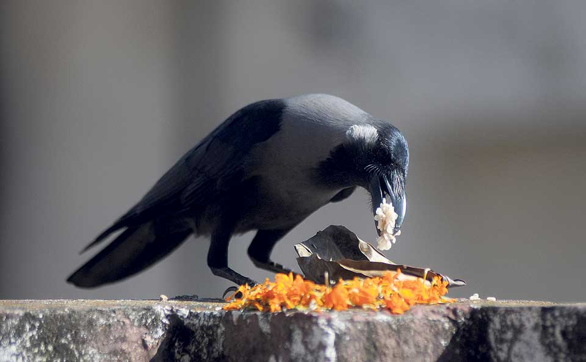
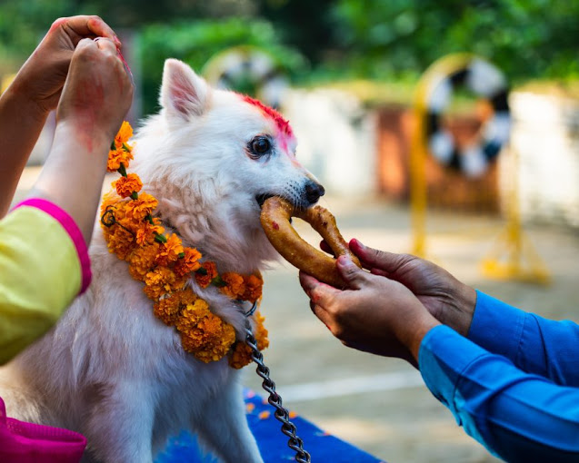
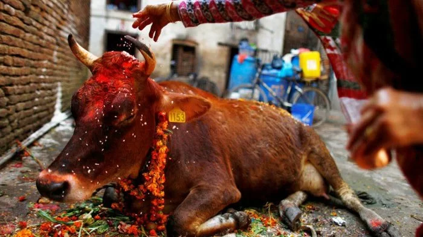
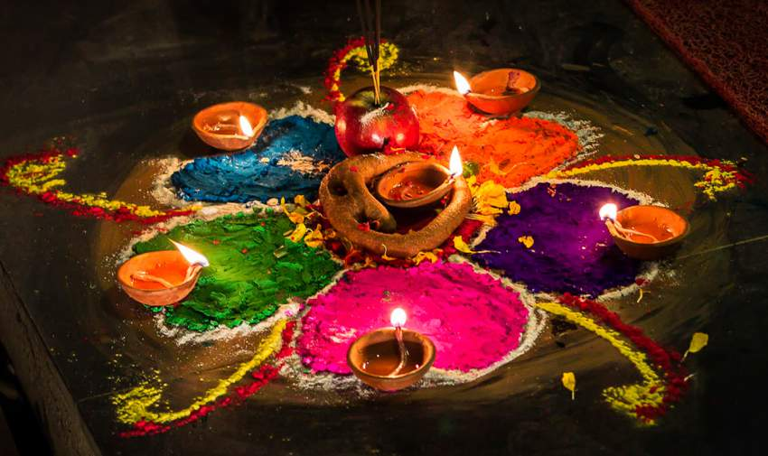
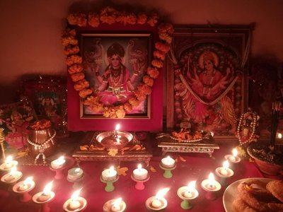
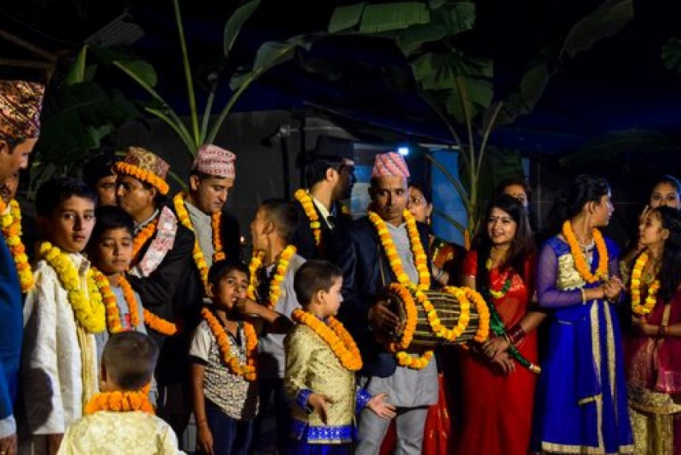
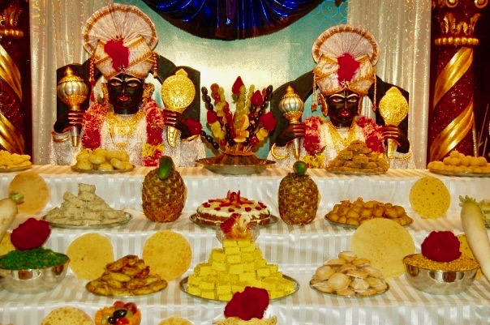
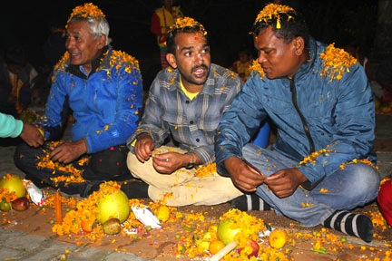

Tihar also known as Deepawali is a Hindu festival. It is celebrated for 5 days. It is celebrated mainly in Nepal and the Indian states of Assam and Sikkim. It is also celebrated in Darjeeling district of West Bengal. It is the festival of lights. In this festival diyas are lit inside and outside the houses to make it bright at night. It is known as Swanti among the Newars and as Diwali among Madhesis. Set in the Vikram Samvat calendar, the festival begins with Kaag Tihar in Trayodashi of Kartik Krishna Paksha. It ends with Bhai Tika in Dwitiya of Kartik Sukla Paksha every year.
Tihar is the second biggest festival in Nepal after Dashain. In this festival animals like crows, dogs, cows, and oxen are also worshipped. People make Rangolis on the floor of living rooms or courtyards. They use materials such as colored rice, dry flour, colored sand or flower Petals to make these Rangolis. Rangolis are made for welcoming Gods and Goddesses of Hinduism mainly Goddess Lakshmi.
Kaag Tihar (Crow Festival) is the first day of Tihar. In this day the crow is worshipped. Hindus regard crows as the messengers of Yamraja, the god of death. People worship it to bring good luck in their houses.
The second day is called Kukur Tihar (Dog Festival). In this day, people offer garlands, tika and delicious food to dogs. Dogs are important animals in Hindu mythology. It is believed that Bhairava, an incarnation of Lord Shiva, had a dog as a vahana (vehicle). It is also believed that Yama, the god of death, had two guard dogs – each with four eyes. The dogs are said to watch over the gates of Naraka, the Hindu concept of Hell. Due to this belief, this day is also known as Naraka Chaturdashi.
The morning of the third day is Gai Tihar (worship of the cow). In Hinduism, cow is the symbol of prosperity and wealth. In ancient times cows were very useful. Their milk, dung, even urine was used for purpose like purification. So, on this day people worship cow by garlanding and feeding them with the best grass. They clean and decorate the houses. Doorways and windows are decorated by garlands made of Saya Patri (marigolds) and makhamali (Gomphrena globosa) flowers.

In the evening Laxmi, the goddess of wealth is worshipped. She is worshipped by lighting oil lamps (Diyo) or candles on doorways and windows. It is believed that in this day she visits her followers and gives them blessings. At night the girls enjoy playing Bhailo by singing and dancing. They visit many houses with musical instruments. They collect money as a tip from houses and share the money amongst themselves.


From the third day onward Tihar is celebrated with Deusi and Bhailo with light and fireworks. Boys sing Deusi and the girls sing Bhailo. In return, the home owners give them money, fruit and selroti (a Nepali roundel made of rice flour and sugar). Social workers, politician, and young people also visit local homes. They sing these songs and collect money for social activities.

There are 3 different kinds of pujas on the fourth day. Mainly ox is worshipped in this day by giving different foods. It is observed as Goru Tihar or Goru Puja (worship of the oxen). People who follow Vaishnavism perform Govardhan Puja. Govardhan Puja is worship towards Govardhan mountain. Cow dung is taken as representative of the mountain and is worshiped. Another type of puja is Mha Puja (worship of self). It is done by the people of Newar community during the night. This day is seen as the beginning of the new Nepal Sambat calendar year.
 Govardhan Puja  Mha Puja